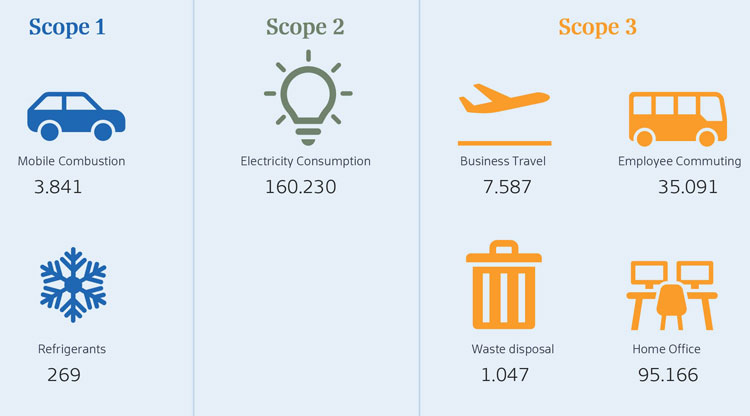
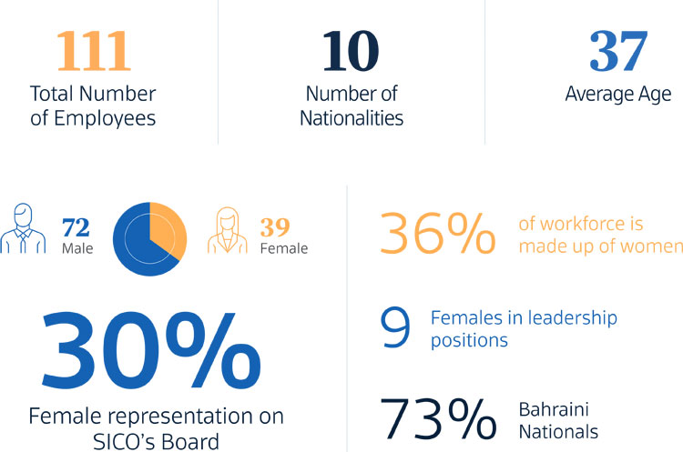
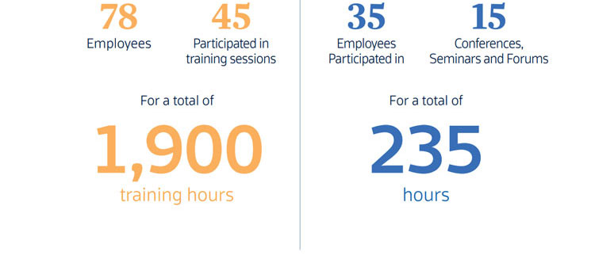

ESG
SICO Publishes First GHG Report to Measure and Monitor its Impact on the Environment
With climate change now taking the forefront as the single biggest challenge of our lifetime, SICO has taken proactive steps to mitigate its negative impact on the environment. We have always believed that ‘how we do business’ is just as important as ‘what we do as a business’ which is why we are working to integrate ESG (environmental, social, and governance) factors into the fabric of our operations. While all three elements are crucial components of making us sustainable, ‘environmental’ has taken on particular urgency in the past few years as rising global temperature threaten to irreversibly impact every facet of our lives.
SICO’s first GHG (greenhouse gas) Emissions Report, quantifies how much carbon is released as a result of our daily activities and operations. Measuring greenhouse gas emissions in this manner is generally regarded as the standard technique used to evaluate the impact of human activity on global warming.
It was previously believed that business engaged in financial or professional services do not need to monitor their carbon footprint because they don’t engage in a polluting manufacturing process. Today this is no longer the case. The need to cut global carbon emissions by 43% by 2030 is so dire that there is a role for all of us to play and that includes businesses engaged in every sector of the economy including the financial sector. This is why environmental reporting, particularly carbon footprint reporting, has become a worldwide focus in recent years.
Our first GHG report established the foundation or baseline for us to be able to monitor our progress and identify areas of improvement so that we may reduce GHG emissions in the coming years. The report includes a detailed breakdown of SICO’s GHG emissions from January 1 to December 31, 2021. These include direct emissions from controlled equipment and assets, emissions from purchased electricity, and other selected categories for SICO, SICO Funds Services and SICO UAE but not SICO Capital as it is a newly-acquired asset that does not yet fall under the reporting period. SICO went the extra mile and also calculated the indirect effect of emissions of our staff who worked from home during part of the pandemic period so that we could capture a comprehensive view of our carbon footprint during the full reporting period.
The study and estimates were based on widely recognized global protocols such as the Greenhouse Gas Protocol, the Intergovernmental Panel on Climate Change (IPCC) Guidelines for Greenhouse Gas Inventories, the US Environmental Protection Agency (EPA), and the United Nations Framework Convention on Climate Change (UNFCCC).
The total GHG emissions of our business as of 2021 were 571.962 Mt CO2e. Our emissions per employee also came in well below Bahrain’s GHG intensity rate per capita and in line with the GCC’s average per employee for the financial sector in the GCC.
GHG EMISSIONS In Mt CO2e

We are proud of our results and even more proud that we are one of the first financial institutions in Bahrain to have taken this important initiative. We hope that others will follow our lead and now that we have set our baseline, we look forward to outlining actionable initiatives that we can undertake together to minimize our negative impact on the environment.
To learn more please download our full GHG report here.
Diversity is Key to Our Success as an Organization
SICO is an equal opportunity employer , with a diverse workforce , and a culture that empowers women

Developing talent, mentoring , and promoting from within the organization is a top priority at SICO


SICO Employees Organize a Food Drive in the Holy Month of Ramadan
Members of the team at SICO participated in a food drive during the month of Ramadan. A total of 265 food boxes were donated for local communities in the capital governorate. SICO met with the Deputy Capital Governorate Hassan Abdulla Al-Madani to discuss the governorate's sustainability programs and future collaboration plans.
Other CSR activities included funding the purchase of insulin pumps for diabetic children, supporting a zero-food waste campaign in Bahrain, as well as supporting Shamsaha, a non-profit organization for victims of domestic and sexual violence.

The Students of Ibin Khaldoun National School in Bahrain, Mentored by SICO’s Sumaya al Jazerri, Won First Place at the TradeQuest Competition
SICO has been a sponsor of TradeQuest since 2008, a competitive financial simulation that is geared to provide university and high school students with real-life experiences simulating the local and international financial markets. Participants form investment teams consisting of seven to eight members are given virtual portfolios worth BD 500,000 and USD 4 million to invest in companies listed on the BHB and New York Stock Exchange (NYSE). They are then asked to trade both markets during specified trading sessions via an electronic trading platform on BHB’s website. Students are provided with mentors throughout the process and then evaluated based on their team strategy and the financial performance of their portfolio.